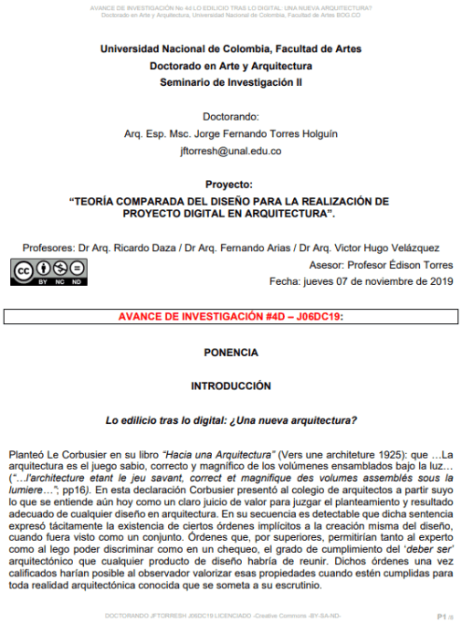
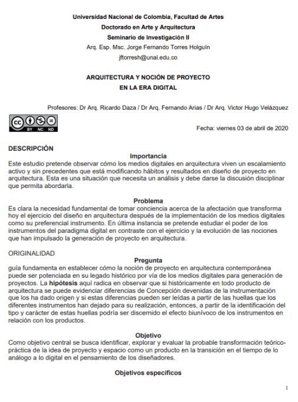
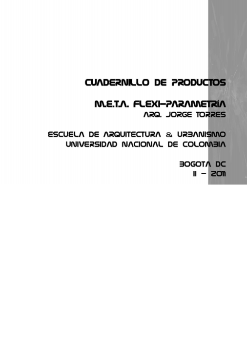
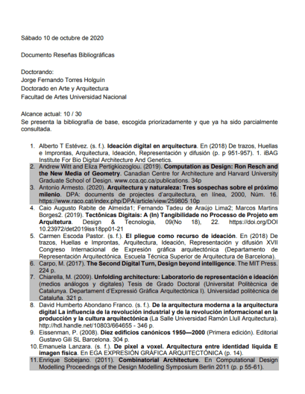
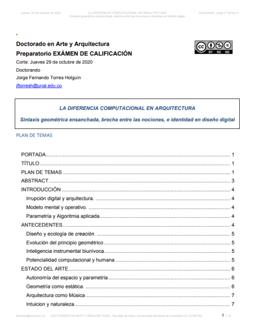
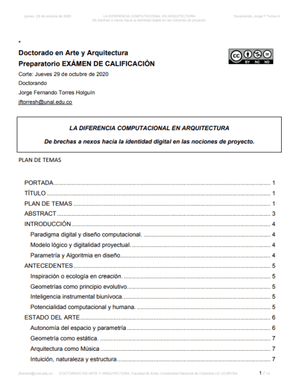

Librería
Inicio
Fuentes
Avances
Presentaciones
Avances de Investigación
Avances de investigación para proyecto y ponencia.

Lo edilicio tras lo digital: ¿Una nueva arquitectura?
AVANCE DE INVESTIGACIÓN #4D J06DC19:
Ver Documento

Arquitectura y Noción de Proyecto
en la Era Digital
Examen de calificación - Avance 5
Ver Documento

CUADERNILLO DE PRODUCTOS
META I - V1
Ver Documento

SEGUNDA ENTREGA PARCIAL DOCUMENTO
RESEÑAS BIBLIOGRAFICAS JFTORRESH DOCTORADO EN ARTE Y ARQUITECTURA S10OC20
Ver Documento

Sintaxis geométrica ensanchada, brecha entre las nociones, e identidad en diseño digital
EXÁMEN DE CALIFICACIÓN
Ver Documento

De brechas a nexos hacia la identidad digital en las nociones de proyecto.
EXÁMEN DE CALIFICACIÓN
Ver Documento
2020 © Todos los derechos reservados - Jorge F Torres H
Designed with Mobirise
Free HTML Page Maker